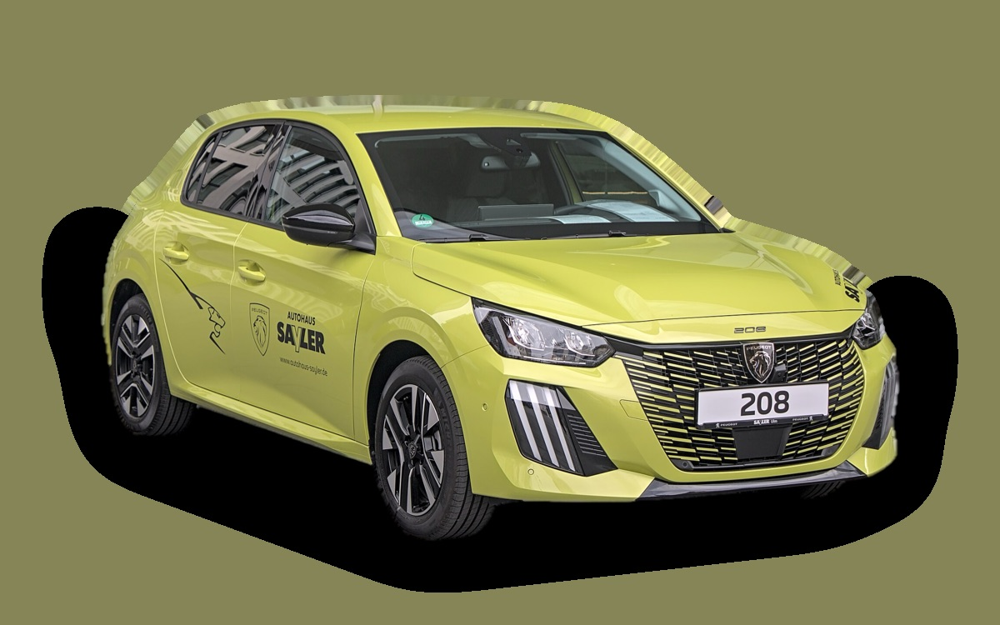
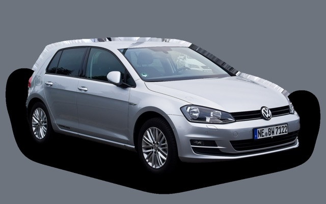
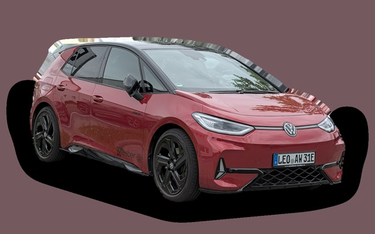
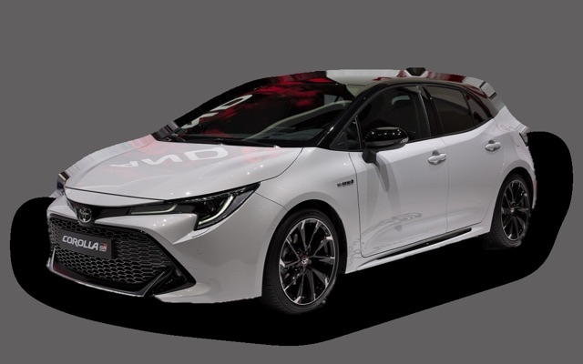

What does a Peugeot 208 cost per month?
A 2023 Peugeot 208 costs about SEK 3,052 a month, all in.
SEK 3,052per month, 2023 model
SEK 157,000price, 2023 model
SEK 227,400new from
Cvalue grade (2023)


Monthly cost by model year
| Model year | Version in the calculation | Price | Per month | Grade |
|---|---|---|---|---|
| 2026 | PureTech 100 manuell, Active | SEK 227,400 | SEK 3,727 | D |
| 2023 | PureTech 100 manuell, Active | SEK 157,000 | SEK 3,052 | C |
| 2020 | PureTech 100 manuell, Active | SEK 130,000 | SEK 2,977 | C |
Based on 5 years of ownership and 12,500 km a year, with fuel prices from 2026-10-22. The monthly cost includes depreciation, fuel, servicing and repairs, insurance and road tax.
How the cost splits for a 2023 car
- Depreciation: SEK 957/mo
- Fuel: SEK 1,142/mo
- Servicing and repairs: SEK 508/mo
- Insurance: SEK 394/mo
- Road tax: SEK 52/mo
Used prices in ads
| Model year | Median price | Ads | Typical mileage |
|---|---|---|---|
| 2025 | SEK 219,900 | 39 | 28,000 km |
| 2024 | SEK 225,000 | 5 | 33,000 km |
| 2023 | SEK 167,300 | 28 | 38,000 km |
| 2022 | SEK 198,800 | 30 | 43,000 km |
| 2021 | SEK 189,100 | 13 | 55,000 km |
| 2020 | SEK 141,000 | 6 | 68,000 km |
The median price in Swedish ads by model year in October 2026 (source: Blocket). Ad prices are asking prices, and the final price may be lower.
Engines and versions
| Engine | Fuel | Power | 0–100 km/h | Consumption (WLTP) | Range | Model years | Extra cost |
|---|---|---|---|---|---|---|---|
| PureTech 100 manuell | Petrol | 100 hp | 10.2 s | 5.3 l/100 km | – | 2020– | – |
| Hybrid 110 | Hybrid | 110 hp | 9.7 s | 4.6 l/100 km | – | 2024– | +SEK 40,000 |
| e-208 156 | Electric | 156 hp | 8.1 s | 14.8 kWh/100 km | 410 km | 2020– | +SEK 98,500 |
- Trim: Active, Allure (+SEK 28,400), GT (+SEK 48,400)
Facts
- Body
- Hatchback
- Model years
- 2020–
- New from
- SEK 227,400
- Boot
- 352 litres
- Euro NCAP
- 4 of 5 stars
- New-car warranty
- 3 years
- Reliability
- 3 of 5
- Comprehensive insurance, estimate
- SEK 6,000/yr
- Servicing, estimate
- SEK 3,200/yr
Common faults to watch for
- Timing belt in oil breaks down (1.2 PureTech), repair about SEK 11,000
- Engine failure after belt failure, repair about SEK 50,000
- Oil consumption and carbon (1.2 PureTech), repair about SEK 3,000
The faults apply to some engines and model years. The calculator works out the risk for the exact version you choose.
Pros and cons
Pro
Stylish and available as petrol, hybrid and electric.
Con
Cramped rear seat.
Similar cars
 Suzuki SwiftSEK 3,039/mo as a 2026 model
Suzuki SwiftSEK 3,039/mo as a 2026 model
Volkswagen Golf 7SEK 3,083/mo as a 2016 model
Volkswagen ID.3SEK 3,098/mo as a 2023 model Volvo C30SEK 3,132/mo as a 2010 model
Volvo C30SEK 3,132/mo as a 2010 model Honda JazzSEK 3,132/mo as a 2023 model
Honda JazzSEK 3,132/mo as a 2023 model
Toyota CorollaSEK 3,141/mo as a 2023 model
Updated 2026-10-29 · ad data Oct 2026